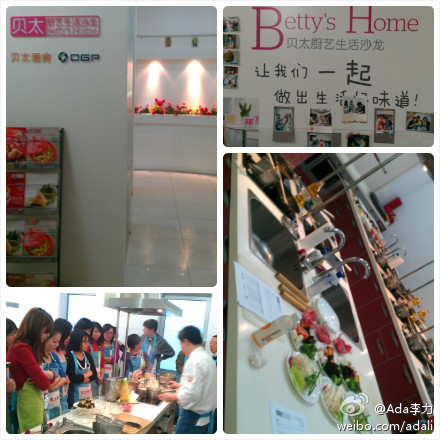
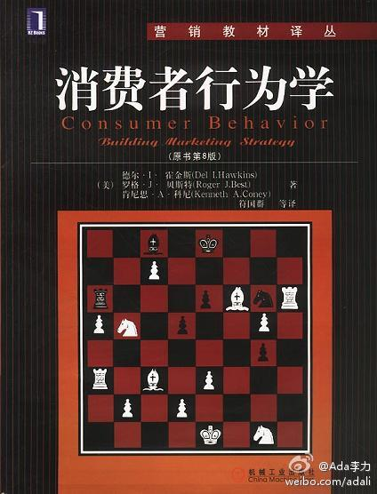

参观了贝太厨艺沙龙，环境很温馨。这种手把手教人做饭的活动，我在自己家里也搞过，对象是小孩子，教她们做饼干和面包，最多的一次有七个孩子。可惜姣姣并不喜欢做这些东西，也不参与，所以这类玩面的活动只做过两次。 
你的补充，更加证明了IT男中，盛产模范老公和模范爸爸。//@我们的奋斗：以我们组的情况看，普遍IT男都是上得厅堂，下得厨房的，咋就没见过谁回家能特别男人的有老婆端茶送水的啊？哈哈 //@我们的奋斗:清一色女性啊？ 怎么觉得IT男在家地位都不高呢？@Ada李力:参观了贝太厨艺沙龙，环境很温馨。这种手把手教人做饭的活动，我在自己家里也搞过，对象是小孩子，教她们做饼干和面包，最多的一次有七个孩子。可惜姣姣并不喜欢做这些东西，也不参与，所以这类玩面的活动只做过两次。
在读《消费者行为学》 ★★★★ “这个版本是《第八版.中国版》，几乎每章开始都有用一个中国的消费者描述作为开头。国外教材和著作，最吸引人读下去的也在于此。用事例，把理论讲解得很生动；通常..” 网页链接 